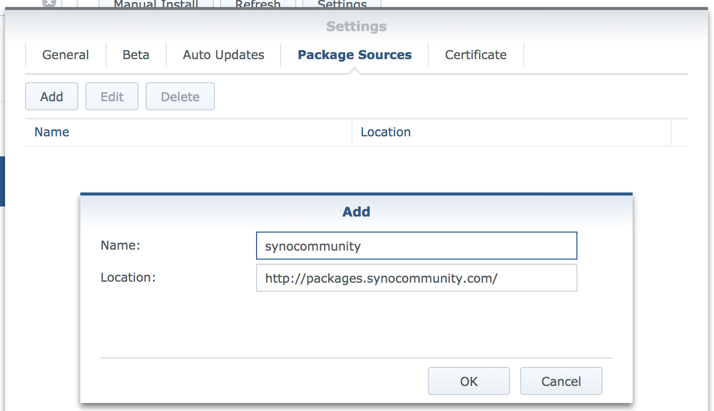
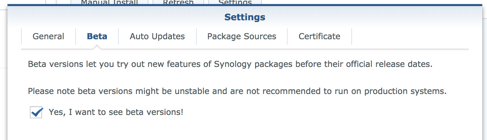

Posted on 15 Jul 2019 By Noah Hütter
Encrypted remote backup of a Synology NAS using Raspberry Pi and duplicity.
My Data is currently stored on a 5 bay Synology NAS running a SHR RAID. All data is periodically backed up to a external hard drive using HyperBackup. This way my data is safe from a RAID failure. BUT what if the data gets mechanically destroyed or a virus encrypts all data on the NAS? An off-site backup solution must be found.
A Raspberry Pi that I had laying around doing nothing and an external USB hard drive for storage is located at a friends home. Power consumption is maximum 15W (5W raspberry + 10W HDD). The Pi forwards a port for SSH using UPnP and announces its outside IP to my NAS every minute. On my NAS a periodical task runs the backup using duplicity.
Split into two parts for setting up the Raspberry PI and the NAS.
The Raspberry Pi at a friends is called Outpost. Set-Up a minimal Raspbian install and enable SSH to get started. Install upnpc using this command:
sudo apt-get install miniupnpc
Copy the following script into the pi user’s home directory and Change the HOST and HOST_PORT variables to the domain name or external IP of your NAS and its SSH port.
#/bin/bash
# Outside port to be openned for incomming ssh connections
PORT=37326
# Host Name and Port of the announce destination using SSH
HOST=yourdomainorstaticip.com
HOST_PORT=22 # forwarded SSH port
curl -s http://whatismyip.akamai.com/ | ssh outpost@$HOST -p$HOST_PORT "cat > ~/outpost_ip.txt; echo ":$PORT" >> ~/outpost_ip.txt"
# Make sure port is forwarded
upnpc -a `ifconfig | sed -En 's/127.0.0.1//;s/.*inet (addr:)?(([0-9]*\.){3}[0-9]*).*/\2/p'` 22 $PORT TCP
This script will get the Pi’s public IP and put it in a file in the user outpost home directory of the NAS. Furthermore it opens the port and redirects it to the Pi’s SSH port.
Now create a user outpost on your NAS and enable SSH for that user by adding a triggered task on boot to change the login shell. Make sure the task is executed by root.
/usr/bin/awk -i inplace -F: 'BEGIN{OFS=":"}/^outpost\:/{gsub(/.*/,"/bin/sh",$7)}1' /etc/passwd
By default only the users in the administrator group have SSH login permissions. This line will alter the /etc/passwd file to enable SSH login for the user outpost.
Make sure you have no typos and try it out on a copy of /etc/passwd. If this script screws up your passwd file you won’t be able to log into your NAS anymore!
Next we create ssh keys to log into your NAS from the outpost without using a password. On the outpost run changing HOST and PORT to your NAS hostname and SSH port.
ssh-keygen
ssh-copy-id outpost@HOST -pPORT
This will allow the outpost to log into your NAS without password. Test it by opening a SSH connection:
ssh outpost@HOST -pPORT
Now it’s time to test the announce script. Enable execution permission and launch the script:
chmod +x announce.sh
./announce.sh
You should now have a file called outpost_ip.txt in the home directory of the user outpost on the NAS holding its public IP and the forwarded SSH port. On your NAS open a test connection to the outpost using:
HOST=`cat /var/services/homes/outpost/outpost_ip.txt`
USER=pi
ssh $USER@${HOST/:/" -p"}
For the backup we need to log in to the outpost using SSH. Therefore we create SSH keys on the NAS and copy them to the outpost. Sadly Synology doesn’t support the ssh-copy-id command so we have to do this manually. On your NAS run:
ssh-keygen
HOST=`cat /var/services/homes/outpost/outpost_ip.txt`
USER=pi
ssh $USER@${HOST/:/" -p"} "mkdir -p ~/.ssh; touch ~/.ssh/authorized_keys"
cat ~/.ssh/id_rsa.pub | ssh $USER@${HOST/:/" -p"} "cat > ~/.ssh/authorized_keys"
This should grant you access to the outpost without password. Make sure this works by opening a SSH connection using:
HOST=`cat /var/services/homes/outpost/outpost_ip.txt`
USER=pi
ssh $USER@${HOST/:/" -p"}
To ensure the announce script is executed periodically add a cronjob. This will run the announce script every minute, ensuring that we always have the current IP address of the outpost on the NAS.
crontab -e
* * * * * ./announce.sh
The last step is to mount the USB hard drive. Follow the guide here.
The outpost is now set up and ready to take SSH connections from the NAS.
The hard part is now done. On the NAS side we have to
Add the following address to the Synology package source in the Package Manager and enable beta releases, also in Package Manager Settings:
http://packages.synocommunity.com/


Now install the duplicity package.
The duplicity package comes with a fixed version of gpg2. Create an alias to access this binary and change some settings to make it work (source here)
echo "alias gpg2syno='/usr/local/gnupg/bin/gpg2'" >> ~/.bashrc
alias gpg2syno='/usr/local/gnupg/bin/gpg2'
mkdir -p ~/.gnupg
echo "allow-loopback-pinentry" > ~/.gnupg/gpg-agent.conf
Now we generate a GPG key par to encrypt our data. Run the following command:
gpg2syno --gen-key
# List keys
gpg2syno --list-keys
Note the key ID, it will be needed later:
pub rsa2048/3387FFED 2018-02-08
uid [ultimate] Fox <fox@forrest.com>
sub rsa2048/81398558 2018-02-08
# Key ID = 3387FFED
Now we create the backup and restore scripts. I put them into a folder
mkdir -p ~/scripts/outpost/
This is the script for backup outpost_backup.sh:
#!/bin/bash
# GPG Key to use for data encryption
KEY_ID=3486F4FD
# Host
HOST=`cat /var/services/homes/outpost/outpost_ip.txt`
REMOTE_USER=pi
if [ $# -ne 2 ]
then
echo "Not enough input arguments"
echo "Usage: ./outpost_backup.sh SOURCE DESTINATION"
exit -1
fi
export USER=noah
echo Command: $0 $1 $2
echo User: $USER
echo Hostname: $HOSTNAME
# Fetch input arguments
SOURCE=$1
NAME=$2
# Set destination, relative to pi home
DESTINATION=storage/new/$HOSTNAME/$NAME
# Other settings
ARCHIVE_DIR=/var/services/homes/$USER/scripts/outpost/archive/
TEMP_DIR=/var/services/homes/$USER/scripts/outpost/tmp/
LOG_FILE=/var/services/homes/noah/scripts/outpost/log/backup_`date +%Y_%m_%d_%H:%M`
# Backup command
duplicity_cmd(){
ssh $REMOTE_USER@${HOST/:/" -p"} "mkdir -p $DESTINATION"
duplicity \
--asynchronous-upload \
--verbosity 1 \
--gpg-binary=/usr/local/gnupg/bin/gpg2 \
--archive-dir=$ARCHIVE_DIR \
--tempdir=$TEMP_DIR \
--encrypt-key $KEY_ID \
--exclude "**files_trashbin" \
--exclude "**#recycle" \
--log-file $LOG_FILE\_$NAME.log \
--ssh-options="-oStrictHostKeyChecking=no" \
$SOURCE rsync://$REMOTE_USER@$HOST/$DESTINATION
}
duplicity_status(){
duplicity collection-status \
--gpg-binary=/usr/local/gnupg/bin/gpg2 \
--archive-dir=$ARCHIVE_DIR \
--tempdir=$TEMP_DIR \
--encrypt-key $KEY_ID \
--log-file $LOG_FILE\_$NAME_status.log \
--ssh-options="-oStrictHostKeyChecking=no" \
rsync://$REMOTE_USER@$HOST/$DESTINATION
}
# Run backup
duplicity_cmd
duplicity_status
The most important line is the last line launching the duplicity program. The parameters are
| key | value |
|---|---|
| –asynchronous-upload | Simultaneously compress and upload data |
| –verbosity 5 | talk to me |
| –gpg-binary=/usr/local/gnupg/bin/gpg2 | link to the gpg2 library |
| –archive-dir=$ARCHIVE_DIR | archive directory. This is specified to not use a folder on / because storage is limited there |
| –tempdir=$TEMP_DIR | same reason as –archive-dir |
| –encrypt-key $KEY_ID | your encryption key to use |
| $SOURCE | the source folder |
| rsync://$USER@$HOST/$DESTINATION | destination using rsync |
And this is the script for restoring:
#!/bin/bash
if [ $# -ne 3 ]
then
echo "Not enough input arguments"
echo "Usage: ./outpost_restore.sh HOSTNAME_GIVEN NAME RESTORE_DESTINATION"
exit -1
fi
# GPG Key to use for data encryption
KEY_ID=3486F4FD
# Host
HOST=`cat /var/services/homes/outpost/outpost_ip.txt`
REMOTE_USER=pi
# Fetch arguments
HOSTNAME_GIVEN=$1
NAME=$2
RECOVER_DST=$3
# Set destination, relative to pi home
REMOTE=storage/new/$HOSTNAME_GIVEN/$NAME
# Restore command
duplicity_cmd(){
duplicity restore \
--verbosity 5 \
--progress \
--gpg-binary=/usr/local/gnupg/bin/gpg2 \
--encrypt-key $KEY_ID \
rsync://$REMOTE_USER@$HOST/$REMOTE $RECOVER_DST
}
# Recover command
duplicity_cmd
Put them in ~/scripts/outpost/.
To test the scripts we create a folder containing some files and launch the backup task.
cd scripts/outpost/
mkdir -p test
touch test/file{0..9}
chmod +x outpost_backup.sh
chmod +x outpost_restore.sh
./outpost_backup.sh test/ test
Your data should now be on the outpost encrypted and compressed! duplicity will run incremental backups if you launch it again, meaning it checks for backup integrity and only transfers changed data.
To check if you can restore the data run:
mkdir restore
./outpost_restore.sh test test/
The last step is to create a scheduled task with the correct arguments. It might look something like this:
/bin/su - noah -c "/var/services/homes/noah/scripts/outpost/outpost_backup.sh /volume2/private/owncloud/clouddata/ clouddata 2>&1 | tee /var/services/homes/noah/scripts/outpost/log/backup_`date +%Y_%m_%d_%H:%M`.log"
Change the user to the one you created the scripts with and the data directories to the ones you want to backup.
The first backup will take lots of time (50GB in about 14h). But after that the backup should take only some minutes. The backup is encrypted so you could install the outpost everywhere you like.
Some commands for GPG.
alias gpg2syno='/usr/local/gnupg/bin/gpg2'
# List keys
gpg2syno --list-keys
# Export private key
KEY_ID=12345678
gpg2syno -a --export-secret-keys $KEY_ID > secret-gpg.key
# Export public key
gpg2syno -a --export $KEY_ID > public-gpg.key
# Import pirvate key (includes public key)
gpg2syno --import secret-gpg.key